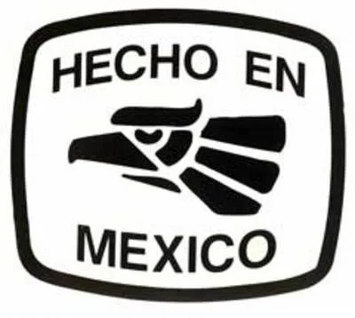
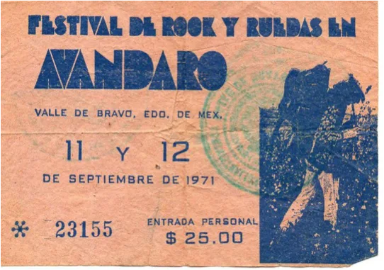
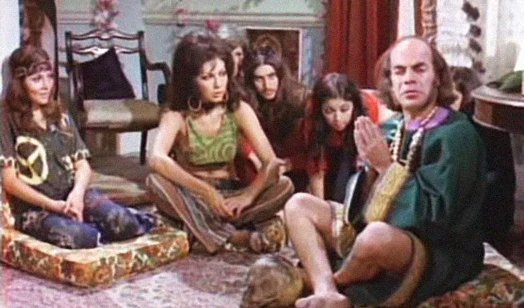
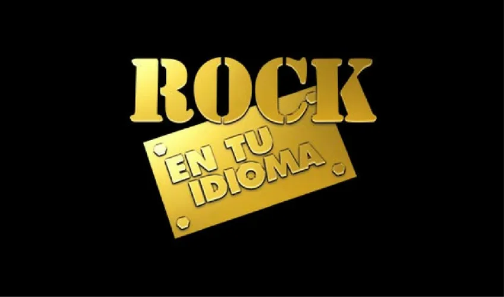
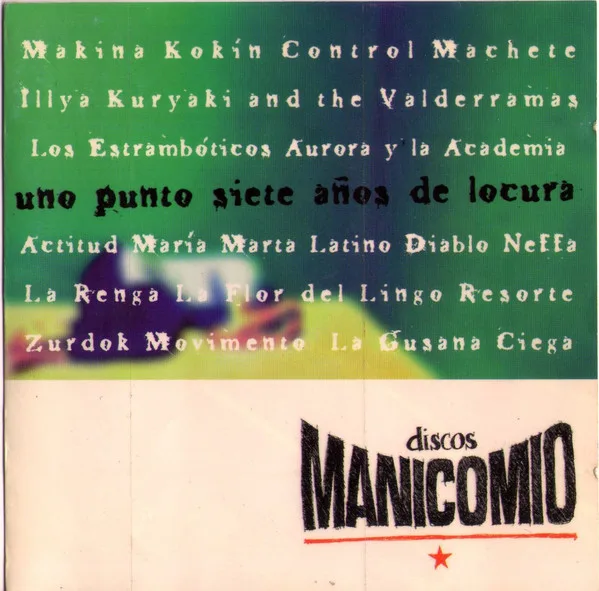
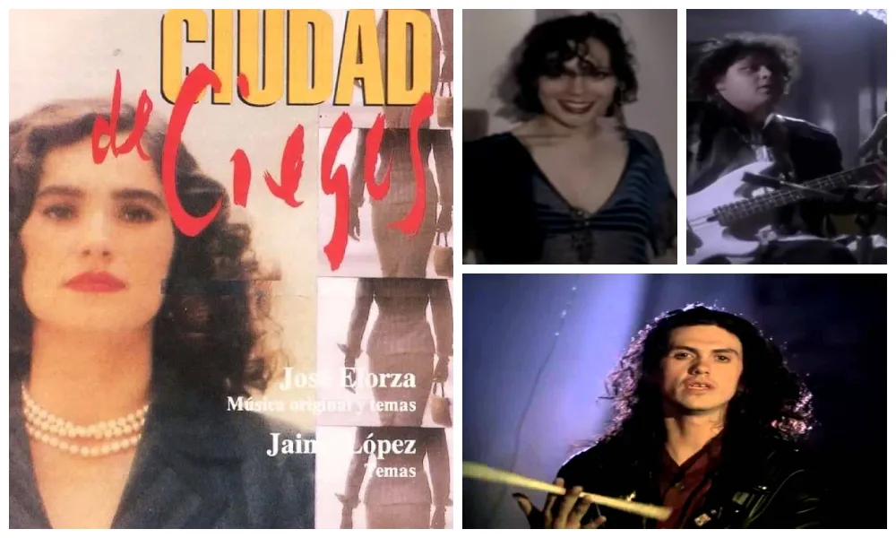

Una historia de lucha y constancia

Tal vez el Vive Latino, los conciertos, las tocadas en bares, fiestas y ahora en estos tiempos de confinamiento en casa las sesiones en vivo en las diferentes plataformas, esto te puede parecer normal dentro de la escena musical en nuestro país, pero hace algunas décadas atrás esto no existía. Pocas eran las bandas y mucho menos había un apoyo para promocionar su música pero siempre hubo quien se las ingenio para abrir las puertas para que el Rock Mexicano saliera adelante. A continuación te mencionare algunas bandas que cargaron este gran peso:
LOS INICIADORES
Durante la década de los 50's y 60's, en el panorama del rock en México predominaban las versiones de temas estadounidenses, muchas de las cuales resultaron ser más exitosas que las canciones originales pero también empezaron a surgir en México varias bandas consideradas como los iniciadores del Rock en nuestro país, como los Los Teen Tops, Los Rebeldes del Rock, Peace & Love, La Fachada de Piedra, Los Locos del Ritmo, Love Army, La Revolución de Emiliano Zapata, El Ritual, Ciruela, Los Yaki, Tinta Blanca; Los Dug Dug's, Toncho Pilatos, Bandido, Three Souls In My Mind, Chac Mool, Ritmo Peligroso, Size, Enigma, Fongus, Decibel (por mencionarles algunos). La mayoría tenían letras en ingles que poco a poco fueron cambiando al español. Algunas de estas bandotas formaron parte del legendario festival de Rock y Ruedas en Avandaro el cual se transmitió a través de un teléfono de radio. Cabe mencionar que el único sobreviviente es el TRI.


LOS CONTINUADORES
Para la década de los 80's surgieron otros músicos y bandas, como Jaime Lopez, Cecilia Toussaint, Kenny y los Eléctricos, Botellita de Jerez, Rostros Ocultos, Newspaper, que prepararían el camino para que después del fatídico temblor de 1985 dentro de los escombros surgieran los Caifanes, Maldita Vecindad y los Hijos del Quinto Patio y poco mas tarde La Lupita, Santa Sabina, Café Tacuba, La Cuca, La Castañeda, Fobia, Los amantes de Lola, Azul Violeta, Tijuana No!, Coda, Radio Kaos, Kerigma, Víctimas del Doctor Cerebro, El Juguete Rabioso, entre otros, que consolidaron la presencia del Rock hecho en México y abrieron miles de espacios para la escena rockera actual.
LAS DISQUERAS
Uno de los primeros sellos en editar Rock hecho en México fue Comrock, fundado por Juan Navarro y Ricardo Ochoa. Ellos hicieron realidad los discos de Kenny y los Eléctricos y Ritmo Peligroso, ademas de formar los inicios del movimiento ''Rock en tu Idioma''. El éxito que tuvo el Rock Nacional en los 80's y 90's se debió a que una disquera transnacional, La BMG, abrió un subsello llamado Culebra, este le dio chance a casi todas las bandas de la época apoyando y respetando sus conceptos musicales, aunque no con los recursos que los músicos hubieran querido. Discos culebra funciono hasta 1997 y su cierre surgió discos Manicomio, que dio espacio a bandas como Control Machete, Azul Violeta y Molotov.


LOS CONCURSOS
En 1987 BMG lanza la primer convocatoria para un concurso de Rock consolidando el movimiento ''Rock en tu Idioma''. De ahí surgieron Maldita Vecindad y los Hijos del Quinto Patio y Fobia. Mas tarde vendrían otros concursos como el ''Metalaria'' y la ''La Batalla de las Bandas'' que se realizaban año con año con una gran participación de bandas del D.F. y del interior de la república.
TEATRO, CINE Y ROCK
Con el auge del Rock también tuvieron gran empuje la danza, el teatro, el performance y las artes en general, pues muchos músicos se involucraron en estas disciplinas o colaboraban con artistas de otros géneros. Tal es el caso de Santa Sabina, que se formo después de que sus integrantes se conocieron al ser parte del elenco de la obra de teatro Vox Thanatos, montada en 1988; y de la incursión en cine de Saul Hernandez, Rita Guerrero, y Sax de la Maldita en la película Ciudad de Ciegos de 1990. Por su parte, Café Tacuba contó con la participación de Ofelia Medina en el vídeo de Maria de 1992.

Les dejo algunas rolitas para que las topen y le den un llegue!!!